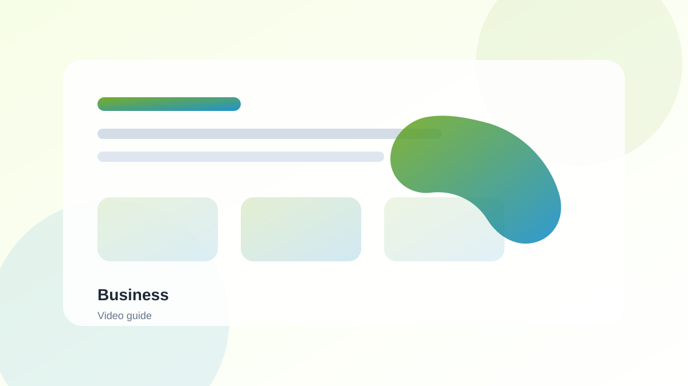

AI Productivity Tools
Manage your video production workflow.
Explore ->Create stunning videos faster with AI-powered video editing, generation, and enhancement tools. Whether you're a content creator, marketer, or business owner, these tools will transform your video production workflow.
This page is designed for anyone who creates videos, from content creators and YouTubers to marketers and business owners. Whether you're editing existing footage, generating new content from text, or enhancing video quality, these AI tools can help you save time and create better videos.
AI video tools can revolutionize your video production workflow. Here are some popular applications:
Selecting the right AI video tool depends on your specific needs and workflow. Consider these factors:
Explore our curated list of AI video tools that are transforming video production.
All-in-one AI video editing and generation platform.
AI-powered audio and video editing with transcription.
AI video generation from text prompts and images.
Adobe Premiere Pro with AI-powered features.
AI-powered captioning and transcription service.
AI video generation with digital avatars.
Create professional videos efficiently with this AI-powered workflow:
Yes! Tools like Pika Labs and Runway ML can generate videos directly from text prompts. While the output quality varies, these tools are rapidly improving and can create impressive results for content creation, marketing, and creative projects.
No, many AI video tools are designed for users with little to no editing experience. Tools like Descript use text-based editing, making it easy to edit videos like you would edit a document.
Pricing varies. Some tools like Runway ML offer free tiers with limited usage, while others like Synthesia start around $29/month. Enterprise plans are available for larger teams with more advanced needs.
Yes! Many AI tools offer features like upscaling, noise reduction, color correction, and stabilization to enhance existing video footage. Some specialized tools focus specifically on video enhancement.
Descript is excellent for automatic captioning with high accuracy and customization options. It also offers multilingual support. Other good options include Rev and Otter.ai for standalone transcription services.
Explore our other categories that complement video production:



Discover the top AI tools to enhance your video production workflow.
Read Guide ->
Plan video ideas, outlines, hooks, and scripts before production.
Read Guide ->
Compare practical tools for scripting, editing, generation, and repurposing.
Read Guide ->